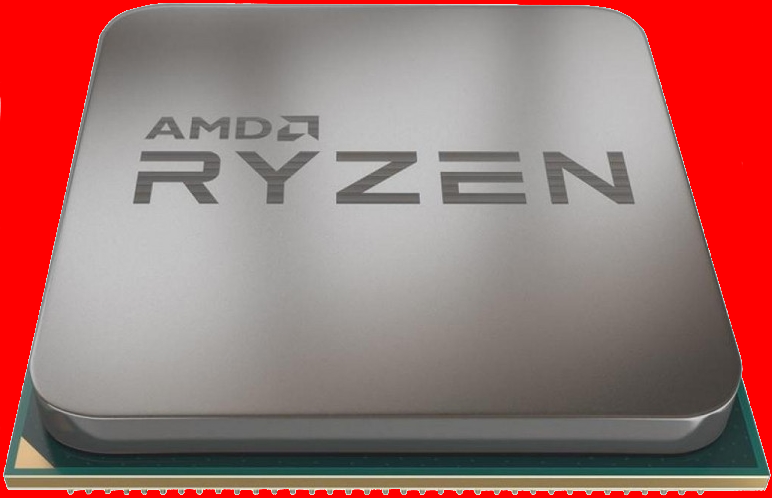
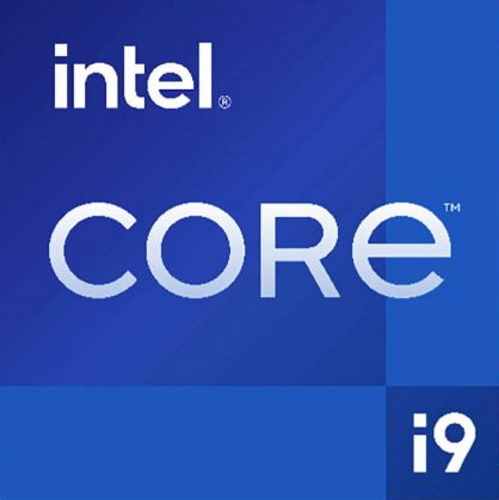
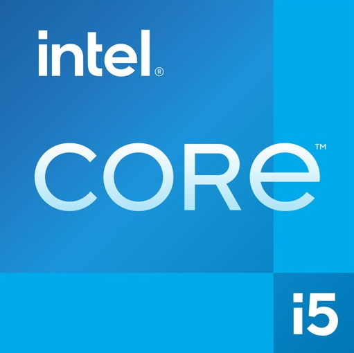

Процессоры
Процессор - (сокращенно ЦП – центральный процессор или международное CPU) – это главный вычислительный элемент в компьютере. Фактически он является сердцем компьютера. На нем лежит вся работа по обработке данных. Остановилось сердце – умер компьютер. Работа процессора, в некоторой степени, действительно напоминает работу сердца, т.к. он работает под управлением электронных импульсов, так называемых тактов. Тактовая частота – это важнейшая характеристика процессора, она измеряется в гигагерцах (Ггц). От нее зависит скорость и производительность вашего ПК. Выше тактовая частота, значит быстрее скорость вычислений. Современные процессоры выполняют несколько миллионов операций в секунду.
Физически процессор представляет собой металлическую пластинку со множеством ножек (выводов), устанавливаемую в так называемый сокет (разъем) материнской платы. Внутри пластины находится кристалл полупроводника, содержащий до 2 млрд. логических элементов — транзисторов. Их размер настолько мал, что они умещаются на кристалле площадью 4-6 см2.
Основными производителями процессоров являются конкурирующие друг с другом компании Intel и AMD. Независимо от производителя процессор обладает характеристиками, от которых зависит его быстродействие.
Процессор обладает целым рядом характеристик, но мы рассмотрим самые главные, которые нужно знать компьютерному чайнику. Как правило, их указывают в характеристиках компьютера в магазине.
Тактовая частота. Один из самых главный параметров процессора, обозначающий количество тактов в секунду и в зависимости от модели процессора может доходить до 3Ггц и выше.
Количество ядер. Ядро – это главный вычислительный модуль процессора. Современные процессоры заключают в одном корпусе от 2 до 8 вычислительных ядер. Такой подход позволяет увеличить производительность ЦП, за счет распределения обработки данных по ядрам. Для простоты понимания можно сказать,что в одном корпусе размещены несколько процессоров.
Выбирая компьютер для покупки, сразу определитесь, для чего он вам нужен. Если только для офисных задач и интернета, то покупайте компьютер с двухядерным процессором. Для игр, обработки видео и трехмерной графики или для работы лучше будет компьютер с 4 или 6 ядрами.
Примеры реальных процессоров
-
Intel Core i5 Comet Lake i5-10400 OEM
Техпроцесс: 14 нм
Кол-во ядер: 6 cores
Кол-во потоков: 12 threads
Тактовая частота: 2.9 ГГц
Частота TurboBoost / TurboCore: 4.3 ГГц
Модель IGP: UHD Graphics 630
Тепловыделение (TDP): 65 Вт
Макс. рабочая температура: 100 °С
Макс. объем поддерживаемой оперативной памяти: 128 ГБ
Макс. частота DDR4: 2666 МГц
-
AMD Ryzen 5 Matisse 3600 BOX
Техпроцесс: 7 нм
Кол-во ядер: 6 cores
Кол-во потоков: 12 threads
Тактовая частота: 3.6 ГГц
Частота TurboBoost / TurboCore: 4.2 ГГц
Модель IGP: отсутствует
Тепловыделение (TDP): 65 Вт
Макс. объем поддерживаемой оперативной памяти: 128 ГБ
Макс. частота DDR4: 3200 МГц
-
AMD Ryzen 7 Vermeer 5800X BOX
Техпроцесс: 7 нм
Кол-во ядер: 8 cores
Кол-во потоков: 16 threads
Тактовая частота: 3.8 ГГц
Частота TurboBoost / TurboCore: 4.7 ГГц
Модель IGP: отсутствует
Тепловыделение (TDP): 105 Вт
Макс. частота DDR4: 3200 МГц
-
Intel Core i9 Alder Lake i9-12900K BOX
Техпроцесс: 10 нм
Кол-во ядер: 16 cores
Кол-во высокопроизводительных ядер: 8
Кол-во энергоэффективных ядер: 8
Кол-во потоков: 24 threads
Тактовая частота высокопроизводительных ядер: 3.2 ГГц
Тактовая частота энергоэффективных ядер: 2.4 ГГц
Частота TurboBoost / TurboCore: 5.2 ГГц
Максимальная частота высокопроизводительных ядер: 5.1 ГГц
Максимальная частота энергоэффективных ядер: 3.9 ГГц
Модель IGP: UHD Graphics 770
Тепловыделение (TDP): 125 Вт
Тепловыделение Max (TDP): 241 Вт
Макс. рабочая температура: 100 °С
Макс. объем поддерживаемой оперативной памяти: 128 ГБ
Макс. частота DDR4: 3200 МГц
Макс. частота DDR5: 4800 МГц
-
Intel Core i5 Alder Lake i5-12600K BOX
Техпроцесс: 10 нм
Кол-во ядер: 10 cores
Кол-во высокопроизводительных ядер: 6
Кол-во энергоэффективных ядер: 4
Кол-во потоков: 16 threads
Тактовая частота высокопроизводительных ядер: 3.7 ГГц
Тактовая частота энергоэффективных ядер: 2.8 ГГц
Максимальная частота высокопроизводительных ядер: 4.9 ГГц
Максимальная частота энергоэффективных ядер: 3.6 ГГц
Модель IGP: UHD Graphics 770
Тепловыделение (TDP): 125 Вт
Тепловыделение Max (TDP): 150 Вт
Макс. рабочая температура: 100 °С
Макс. объем поддерживаемой оперативной памяти: 128 ГБ
Макс. частота DDR4: 3200 МГц
Макс. частота DDR5: 4800 МГц